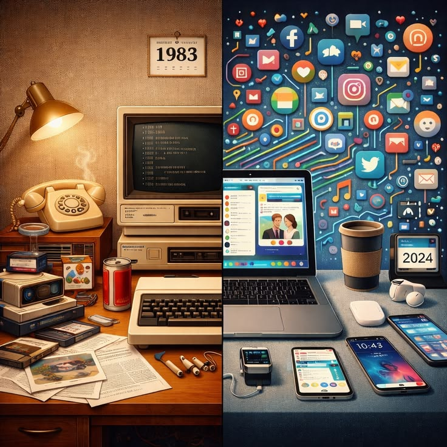

O que é IHC?
A Interação Humano-Computador (IHC) é uma área multidisciplinar situada na interseção da Ciência da Computação, Psicologia Cognitiva, Ergonomia e Design. Ela se dedica ao estudo, planejamento e avaliação da forma como as pessoas interagem com sistemas computacionais, visando tornar essas ferramentas o mais acessíveis, eficientes e agradáveis possível.
Principais Características de IHC
Os projetos focados em IHC buscam equilibrar as necessidades técnicas do software com as capacidades biológicas e cognitivas do ser humano. Suas características fundamentais incluem:
- Usabilidade: Facilidade com que o usuário consegue realizar tarefas usando o sistema.
- Acessibilidade: Garantia de que pessoas com diferentes tipos de deficiência possam utilizar o software.
- Experiência do Usuário (UX): O sentimento e as emoções do usuário durante e após o uso do sistema.
- Design Centrado no Usuário: Processo que coloca as reais necessidades e limitações das pessoas no centro do desenvolvimento.
- Prevenção de Erros: Construção de interfaces intuitivas que minimizem falhas de operação.
Evolução da IHC ao Longo das Décadas
A forma como os seres humanos se comunicam com as máquinas passou por uma transformação radical desde a invenção dos primeiros computadores:
- Década de 1950 (Cartões Perfurados): A interação era indireta, lenta e restrita a especialistas. Não havia telas instantâneas.
- Décadas de 1960 e 1970 (Interfaces de Linha de Comando - CLI): O uso do teclado e comandos de texto permitiu maior controle em tempo real, exigindo memorização de comandos.
- Década de 1980 (Interfaces Gráficas - GUI): Surgem o mouse, janelas e ícones (metafórica de "mesa de trabalho"), popularizados pela Apple e Microsoft.
- Década de 1990 (Surgimento da Web): A navegação por hiperlinks exige novos padrões de design para documentos interativos interligados.
- Década de 2000 (Interfaces Táteis / Mobile): Telas multitoque reformulam a interação, substituindo ponteiros por gestos diretos com os dedos.
- Década de 2010 até o presente (Interfaces Naturais e Ubíquas): Comandos de voz, inteligência contextual, realidade aumentada e dispositivos vestiríveis tornam a tecnologia fluida e integrada ao cotidiano.

Referências e Leituras Recomendadas
Para aprofundar os estudos em Interação Humano-Computador sem o uso de conteúdos gerados por inteligência artificial, consulte as referências acadêmicas e bibliográficas:
- BARBOSA, Simone Diniz Junqueira; SILVA, Bruno Santana da. Interação Humano-Computador. Rio de Janeiro: Elsevier, 2010.
- NORMAN, Don. O Design do Dia a Dia. Rio de Janeiro: Rocco, 2006.
- PREECE, Jennifer; ROGERS, Yvonne; SHARP, Helen. Design de Interação: Além da Interação Homem-Computador. São Paulo: Bookman, 2013.